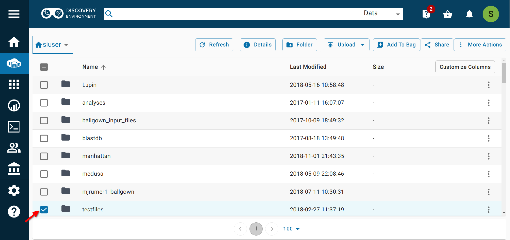
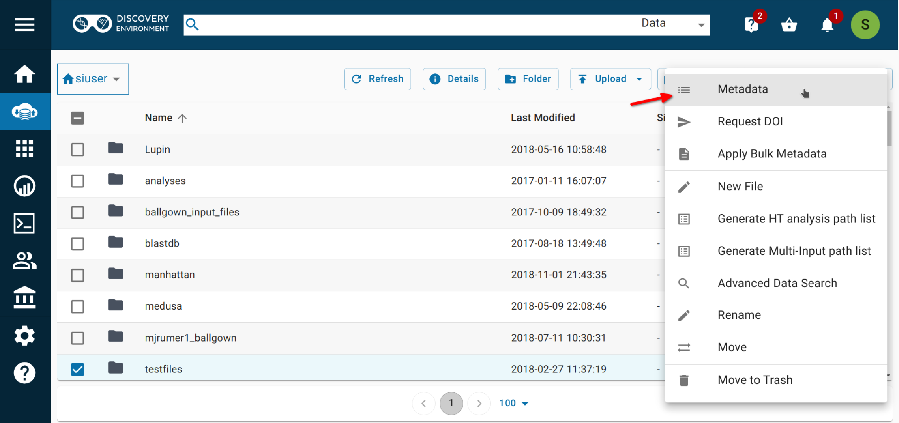
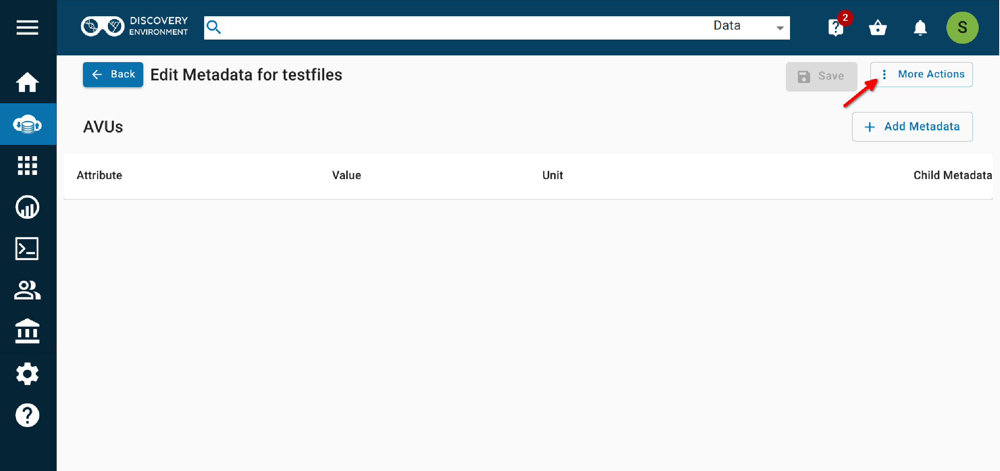
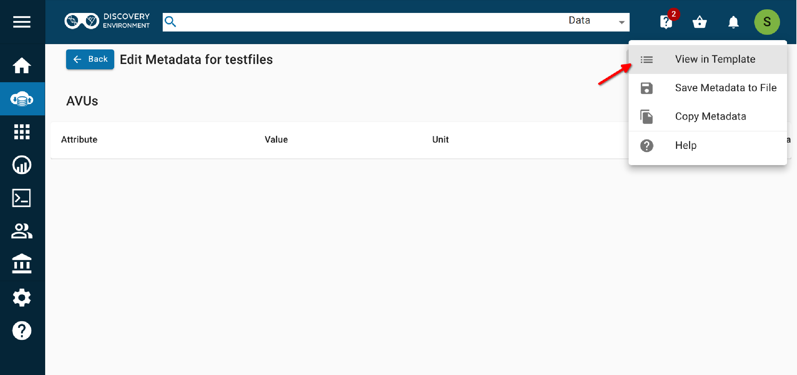
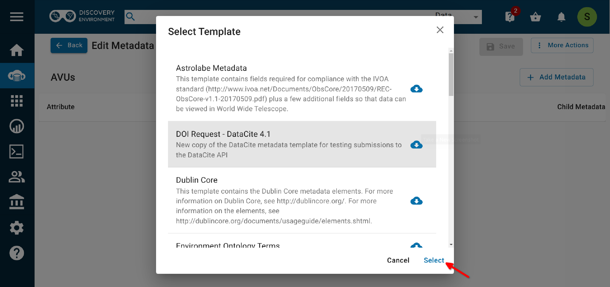
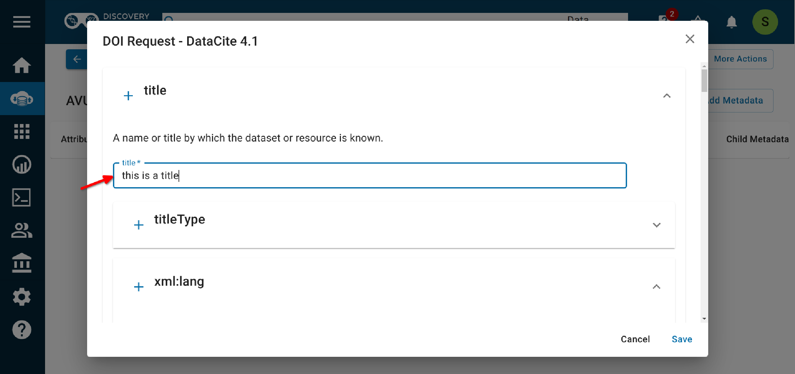
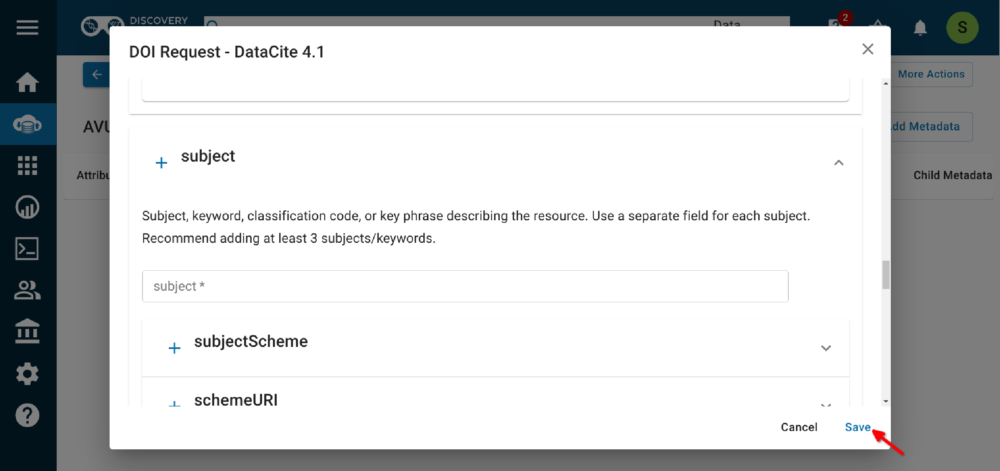
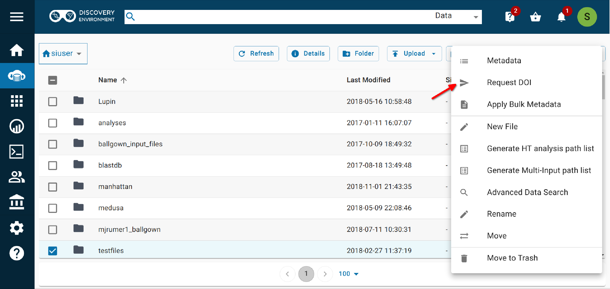

Getting a DOI¶
CyVerse provides Digital Object Identifiers (DOIs) for archiving research data, ensuring long-term stability and citability. DOIs are assigned through CyVerse Curated Data in the Data Commons, our dedicated space for preserving research outputs.
DOIs are only available to users with a paid subscription. 'Basic' (free) CyVerse accounts do not qualify. To upgrade, explore our pricing and subscription options here: https://cyverse.org/subscribe.
DOI Request Quickstart¶
-
Organize data¶
-
Create submission folder¶
- Organize your data so that there is one folder for each DOI (named according to the Data Commons Naming Conventions--see Step 1.b)
- Within that folder, include all files in your data package plus the ReadMe file and the inventory.
- You may have subfolders within a data package.
- You may include compressed files in a package, as described on the FAQ, but do not compress the entire folder/package.
-
Name your top level folder according to the Data Commons Naming Conventions**¶
CyVerse Curated Data datasets are searchable and discoverable based on their metadata. While the dataset itself can have any name chosen by the creator (within reason), the folder that contains the dataset must follow the naming practices described on this page.
General guidelines¶
- Folder names must be unique.
- No invalid characters: Be sure there are no spaces or special characters in the folder name.
- Use underscores between each segment.
Folder Name Format¶
$Creator_$subject_$date
$Creator:
- The Creator entry should be the same as entered in the Creator field of the DOI request - DataCite Metadata request form.
- The Creator is the lead author, the senior author, or the organization with the primary responsibility for the dataset. Start the field (the creator's name) with a capital letter.
Co-creators:
- If there are two co-creators, use both names, separated by an underscore or using camel case.
- For three or more co-creators, select only one name or use a consortium name. Other contributors should be acknowledged in the metadata (as creators or contributors), which will display on the dataset landing page.
$subject:
- Very briefly describes what the dataset is about.
- If the subject is more than one word, use either camel case (example: camelCase) or underscores (example: underscore_between_words) to separate the words.
- If another folder has the exact same name, you may modify the subject slightly to maintain uniqueness.
$date:
- Either just the year, or the month and year, in which the dataset was created.
- Month and year should be used only if there is likely to be more than one dataset with the same creator and subject within the same year.
- Month must be a three-letter abbreviation: Jan, Feb, Mar, Apr, May, Jun, Jul, Aug, Sep, Nov, or Dec.
Examples¶
Valid Names
- Walls_yam_variation_2015
- DeBarry_yamGenomicVariation_2016
- Esteva_yam_variation_Mar2016
- Esteva_Walls_yam_genomic_variation_Jun2016
- YamConsortium_Dioscorea_variation_Nov2017
Invalid Names
- WallsYamVariation_2016 (Missing underscore between the creator and the subject)
- Esteva_yam_variation_June2016 (Month should be three letters: Jun)
- YamConsortium_Nov2017 (No subject)
- Walls_yam_variation_2016#1 (Contains a special character)
- Walls YamVariation 2020 (Contains spaces)
Not recommended
Although the following will pass validation, they are not recommended because the subject is too vague or too detailed:
- Walls_variation_2016 (Subject too vague)
- Esteva_yam_Mar2016 (Subject too vague)
- DeBarry_yam_genetic_and_environmental_variation_with_phenotype_data_version3_Dioscorea_2016 (Too detailed)
-
Create a ReadMe file¶
Create a text file labeled something like README with the following information:
- How you obtained, organized, and labeled your dataset.
- How to reuse the data, such as which apps can analyze the data.
- The inventory (see Step 1.d) may be included as part of the ReadMe file.
- If your data include sequences, the ReadMe should include a list of corresponding BioSample IDs.
-
Examples of good ReadMe files:
-
Create an inventory¶
You must create a plain text document that includes an inventory of the contents of the organized dataset (at a minimum, your dataset will contain one data file and one ReadMe file).
- The inventory may be part of the ReadMe file or a separate file.
- The inventory should include the ReadMe file and any other additional non-data materials you add to your dataset.
- If your dataset contains folders with many files (e.g., large collections of images), you do not need to list each file in the inventory. Simply describe the folder and what it contains.
- Describe the file naming conventions, if that is helpful.
Example Inventory¶
Lyons_DOI-Example-Aug2020/: Top level directory name README.txt: Plain text file that describes the origin of the data, experiments, data processing, etc. Also contains a list and description for the contents of the top-level directory (unless a separate inventory file is provided) License.txt: License file (e.g., GPL, MIT) that governs the use of the data a.data1/: Directory containing data b.data2/: Directory containing more data c.data3/: Directory containing even more data
-
-
Add metadata¶
- You must provide all required metadata in the DOI Request--Datacite 4.1 template at a minimum.
- You may add any additional metadata that is appropriate. We encourage the use of additional metadata to make your data better understood and more discoverable. For more information, including how to apply metadata, see Adding Metadata.
Tip
Get recognition for your work by including ORCIDs for yourself and all creators and contributors.
-
In the Data window, click the checkbox next to the folder.¶

-
Select More Actions > Metadata.¶

-
Select More Actions (again) > View in Template.¶
 
-
Choose the DOI Request - DataCite4.1 metadata template.¶

-
Complete the required fields (marked with an asterisk) and as many of the optional fields as possible.¶

Warning
Be sure to include at least 3 subject key words or phrases, so that people can discover your data (Findability)! Each subject should be in its own field (click on the plus next to Subject to add a subject field. DO NOT use a comma-separated list.)
-
Save the template.¶

-
Submit request and wait for validations¶
-
Before you submit¶
Check the following to be sure everything is in order.
- There are no spaces or special characters in your file or folder names.
- You have included a ReadMe file that includes all the information specified in Step 1.c.
- You followed the Data Commons Naming Conventions
- You have filled in all the required fields in the DOI Request - DataCite 4.1 metadata template
- You have included at least 3 subjects in your metadata
- Each subject is in a separate field (not comma-separated).
- The description in your metadata is adequate (other users can tell what your data describe).
- You understand that once the DOI is issued you cannot change the data. If you know your data will change you should consider waiting to request a DOI. If you do need to make changes later this DOI can be deprecated, a new DOI issued, and the two DOIs linked together as versions.
-
Submit DOI request¶
In the Data tab, click the checkbox next to the folder.
Select More Actions > Request DOI.

After verifying you have read the instructions (i.e., this guide), click Request DOI. You will receive a verification email that your request has been received, and a notification will be listed in the Notifications list in the DE.
At this point, your folder will move to a new location under Community Data/commons_repo/staging.
-
Validations¶
- After submitting your request, a CyVerse curator begins validating your dataset, metadata, and overall configuration of your dataset.
- Validations are based solely on the required DOI metadata and folder-naming conventions, as well as the data's potential utility to the CyVerse and larger scientific community, not the quality of your data. This is not a peer review process.
Possible validation actions
- If the curator determines that minor changes are needed, they may make those changes themselves.
- If the curator determines that substantive changes are needed, they will contact you with required changes.
- If the curator determines that your dataset is not appropriate for the Curated Data section of the Data Commons (e.g., because it belongs in NCBI), you will be notified.
- If the curator determines that the dataset is adequately organized and the DataCite metadata are accurate, they will provide a DOI, and you will be notified of the DOI and the final dataset location.
To check the status of your DOI request, click Notifications (the bell icon) at the top right of the DE screen.
-
-
After publication¶
-
Get your dataset noticed¶
Metadata, the description about your data, is key to getting your dataset noticed in the world wide web. Search engines and bibliographic aggregators index the metadata that you create to obtain a DOI. Thus, it is important that you do the following:
- Make sure the metadata are complete.
- Include precise keywords in the Subject attribute.
- Include descriptive terms about the science and themes involved in your research. These can go in the Subject attribute, but you can also create additional metadata attributes specific to your dataset.
- Include methods used to generate the dataset in the Description attribute, and in more detail in a ReadMe file.
- Describe the dataset for a broader audience so that they understand your research. Use the Description field for this.
- If you or team members have an ORCID ID, make sure to include it in the metadata.
-
Publicize your dataset¶
- Consider using social media to share the DOI of your dataset, and tag CyVerse.
- If you have an interesting story about your data, contact us at learning@cyverse.org, and we may be able to share it through CyVerse outreach.
- If you have a tool or workflow you developed to analyze your data in CyVerse, consider presenting it as part of our CyVerse Webinars.
-
FAQ¶
Why should I publish my data in CyVerse Curated Data?
CyVerse Curated Data is the ideal platform for ease of data reuse. Because it is assigned a permanent identifier (DOI), it is stable and unchangeable, making it ideal for data citation. Because the data is stored in large-scale storage resources that are monitored 24/7, it is secure. Because it allows transfer, upload, and download across different computers and platforms, it can store very large datasets. And because its data is accessible to CyVerse's suite of large-scale computational analysis resources, users can seamlessly analyze, manage, and publish new results. For more information, see Is CyVerse Curated Data Right for My Data?.
What are the conditions for data to be published through CyVerse Curated Data?
Several conditions must exist in your data before it can be published in CyVerse Curated Data:
- You must be a registered CyVerse account holder. To register for an account, see the Create Account Quickstart.
- A dataset may be up to 100 GB in size. If you are interested in depositing a larger dataset, please request an increased data allocation before requesting a permanent identifier using this form.
- Data must be both curated and static. Once the data is published, it cannot be amended (although newer versions can be published).
- Data must be organized to identify the different components (raw, preprocessed, analysis, etc.).
- Compressed files must be in LASzip or open-source gzip family of compression formats including zip, tar, or tar.gz (tgz).
- At minimum, the dataset must include a complete description according to the DataCite standard. Domain-specific schemas, however, and the addition of ReadMe files, publications, or help notes that explain the data as well as how they were obtained and can be used, are encouraged. In organizing and documenting the data, users should ask themselves, Why would someone need to reuse this data?
Can I publish to the Data Commons if my data is not static and curated by CyVerse?
Yes, you can make data available to the public via Community Released Data. You can request a community release data folder using this form.
What is a DOI?
A DOI is a Digital Object Identifier. It is a permanent, redirectable identifier and URL for your dataset, so that even if the location of your dataset changes, it can still be found with the same ID. DOIs are issued by CyVerse through the DataCite service.
Do I need to contact CyVerse before requesting a DOI?
The process of requesting a DOI is automated through the DE, but some tasks must be handled manually, such as DOIs for datasets with more than 1000 files or DOIs for datasets that are stored somewhere other than /iplant/home/share/commons_repo/curated. If you match either of those cases, please contact us at doi@cyverse.org.
Also contact us if you have questions about how to organize your data or what scientific metadata to include.
How much does a CyVerse permanent identifier cost?
At this time, CyVerse does not charge for DOIs. However, the dataset must meet the requirements given in the section Is CyVerse Curated Data Right for My Data?. In the future, there may be a charge for issuing permanent identifiers in the CyVerse Data Commons.
How long will it take to obtain a permanent identifier and publish my data?
Provided that your dataset is in good order and ready to be published, the process may take up to one week, as it may involve a dialogue with the CyVerse data curators. If your data is well organized and the metadata is complete and accurate, the process will be much faster (usually 1-2 business days). It is best to submit your request at least one week before you need the identifier (e.g., for a manuscript submission) or more for very large of complex datasets.
Can I publish different versions of my data?
Yes. Each new version must be documented, and will be assigned a new permanent identifier that references the original dataset. For new versions, contact us at doi@cyverse.org.
How small or big should my data be to be published?
The size of the dataset is less important than its utility to the scientific community. Although there is no lower size limit for requesting a DOI, the default upper size limit for data allocations on CyVerse is 100 GB. If you are interested in depositing a larger dataset, please request an increased data allocation before requesting a permanent identifier.
How do I Determine what to include?
A data collection may be composed of multiple files and different datasets. In preparing your data for publication identify the data and other materials that you consider useful for validation and reuse of your research:
- Data associated with a research project may include multiple files with different roles.
- If there are components of your dataset that belong in a public repository such as NCBI (e.g., fastq files), submit them to the repository, rather than to CyVerse Curated Data. You may want to include a list of external files in your dataset, with links.
- Beyond data, you will include the ReadMe file (see Step 1.c), and you may include scripts or links to scripts to run your analysis. Links to analysis tools can also be included as metadata (see Step 2).
How do I Determine how many permanent identifiers to request?
To determine how many DOIs to request for a given data collection, consider the following:
- Size and number of components.
- How many studies or publications does it represent?
- Is your data collection formed by different datasets and are those likely to be used separately?
- Do you want to create a data collection with one DOI for the entire project and additional related DOIs for distinct datasets so that they are cited individually? DOIs can be nested, so that one dataset is part of another.
- If you are uncertain about how many DOIs to request, contact us at doi@cyverse.org.
What is the policy for submitting compressed data to CyVerse Curated Data?
Certain file types are regularly transferred, stored, and used in applications in a compressed form, such as FASTQ for genomic data and LAZ for LIDAR data. Curated Data supports the deposition of files in the following open compressed formats: LASzip and the open source gzip family of compression formats including zip, tar, or tar.gz (tgz).
Can I publish data in CyVerse if I am not a CyVerse user?
You must have a CyVerse account to publish your data in the Data Commons repositories (Community Contributed or Curated Data). You do not have to be a user of the entire platform, but at minimum you must be able to upload data, add metadata, and use the Discovery Environment to request a DOI. If you have not used the DE's metadata features before, start with Using Metadata in the DE and read the section on metadata templates.
How secure is the data in the Curated Data site?
Data in our platform is stored in large-scale storage resources that are monitored 24/7. Data is authenticated through checksum analysis at ingest, and is locally and geographically replicated so that if any one system fails there will always be a safe copy of your data.
What is CyVerse Data Commons' long-term commitment to hosting public data?
If and when the Data Commons cannot host your data in CyVerse Curated Data, it will transfer custody of the data to another repository and will change the target URL to which the identifier points.
What if in the future I want to move my data to another repository?
If you want to move your data to another repository, please send a ticket with the DOI and new URL location and we will change the DOI target. You may leave a copy of the dataset in the CyVerse Curated Data site for ease of reuse within the computational environment. CyVerse will update the metadata to reflect the relationship between the two identical datasets.
How can I make it easier for people to give me (and my co-creators) credit for using my dataset?
Encourage others to cite your data using the DOI. Each dataset landing page includes a citation that can be copied or downloaded in standard formats (BibTEX or EndNote).
Connecting your data to your ORCID (see http://orcid.org/) also ensures that you get credit for your work. ORCID provides a persistent digital identifier that distinguishes you from every other researcher and supports automated linkages between you and your professional activities, ensuring that your work is recognized. The DataCite metadata template includes places to list ORCIDs of the creator. The DOI creation metadata template has a place for ORCIDs of creators and contributors.
If you have published a paper that goes with your data, be sure to cite the DOI in the paper. Provide a link to the paper's DOI in the metadata under relatedIdentifier.
If your data include specific instructions for citing or reuse, to provide those in the ReadMe file and (if brief) in the reuse_or_citation_conditions metadata field.
Who do I choose for the creator versus contributor?
Creators are the main researchers involved in producing the data, or the authors of the publication, in priority order. To supply multiple creators, repeat this property. A creator may be a corporate/institutional or personal name; it does not need to be the person who is submitting the identifier request.
A Contributor is the institution or person(s) responsible for collecting, managing, distributing, or otherwise contributing to the development of the resource. To supply multiple contributors, repeat this property. For software, if there is an alternate entity that holds, archives, publishes, prints, distributes, releases, issues, or produces the code, use the contributorType hostingInstitution for the code repository.
You must include the role of all contributors. Choose from the dropdown list in the DOI request template.
Which license can I use to publish my data?
You can choose one of two open source licenses, depending on the materials you will be publishing:
- ODC PDDL for non-copyrightable materials (i.e., data only).
- CC0 for copyrightable material (Workflows, White Papers, Project Documents). If you have special circumstances that require a different license (e.g., your dataset is aggregated from previously published data that already has another license), please contact us at doi@cyverse.org.
What metadata standards does CyVerse support for data publication?
All data will follow the DataCite metadata schema (currently using version 4.1). However, DataCite metadata is citation metadata that does not represent the complexity of the research that went behind creating your data. Therefore, we encourage you to include additional metadata. We suggest that you include the metadata records and other help documents in your publication package within a folder labeled as metadata so it is easily identifiable for other users. Consider taking advantage of the DE's bulk metadata application feature for adding file level metadata, especially for large datasets.
What if I want to change or add metadata to my public data?
If you need to make changes to the metadata of a dataset with a DOI, contact us at doi@cyverse.org. If your dataset is connected to a paper that is published after the DOI is created, please contact us with the paper's DOI so we can link it in the metadata.
Where can I go for help on permanent identifiers?
Email the CyVerse DOI team.
Is the CyVerse Curated Data Repository right for my data?¶
Before requesting a permanent identifier in CyVerse Curated Data through the Data Commons, answer the following series of questions.
Question 1. Do you have a CyVerse account?¶
- Are you a registered CyVerse user? If not, register at CyVerse User Portal.
- If so, have you used the Discovery Environment (DE)?
- The tools for submitting data to Data Commons Curated Data are simple to use and available as part of the DE. At a minimum, you should be able to upload and organize your data using the DE or command-line tools, and be able to apply a template.
Question 2. Is your data ready for publication?¶
- Is the dataset complete, stable, and ready for public consumption?
- Are you and all contributors to the dataset prepared to move the data into the public domain (meaning that anyone can access and use the data for any purpose, including commercial purposes)? Have you sufficiently documented how the data was created such that other scientists in your field will be able to reuse it?
- If there is a standard or commonly used format for your datatype, is your data in that format? If no standard exists, is your data in a format that can be easily used by most people with open source software (e.g., tables as a CSV or text file, rather than a Microsoft Excel spreadsheet)?
- Is your data organized in a clear and reasonable structure that others will be able to understand?
If you answered no to any of these questions, your dataset is not yet ready for a permanent identifier through Data Commons Curated Data. Please continue to work on your dataset until it meets these requirements. Data will be reviewed by a curator to ensure that it meets these requirements.
If you would like to make your data public, but it is not complete and/or stable, you may request data hosting in the Data Commons.
Question 3. Is your data suitable for reuse in scientific analyses?¶
- Is your data of the type and format that allow it to be reused in other analyses?
- Are you prepared to supply metadata for your dataset?
- Does your dataset or metadata include sufficient instructions (e.g., a ReadMe file) such that someone in your field can understand how to reuse the data?
Question 4. Is there a canonical repository for your data?¶
- Does a canonical repository exist for your data? Examples include NCBI, EBI, and MG-RAST.
- If a canonical repository exists, you should use it. CyVerse is there to help fill a gap, not replace an existing resource.
If you answered no¶
If you answered no to any of the questions above, your data may be suitable for a DOI, but not through Data Commons Curated Data. You should consider other repositories that are not geared specifically toward data analysis, such as your institution's library.
If your data was generated by or was input for an analysis algorithm or software that you developed yourself, please consider making the method available through CyVerse infrastructure (e.g., the Discovery Environment or Atmosphere) as well.